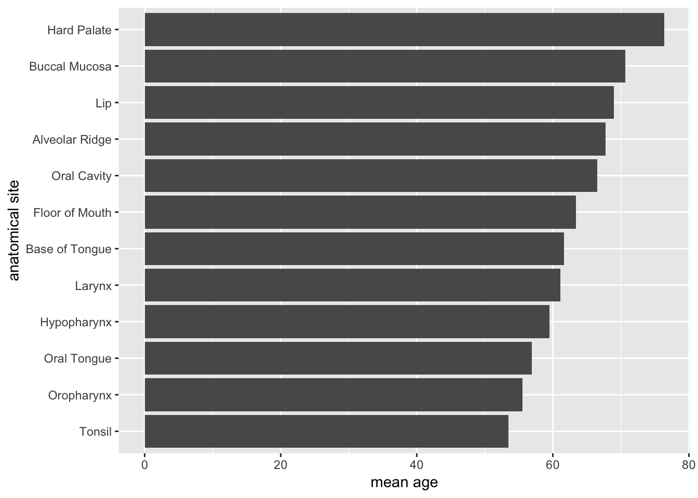
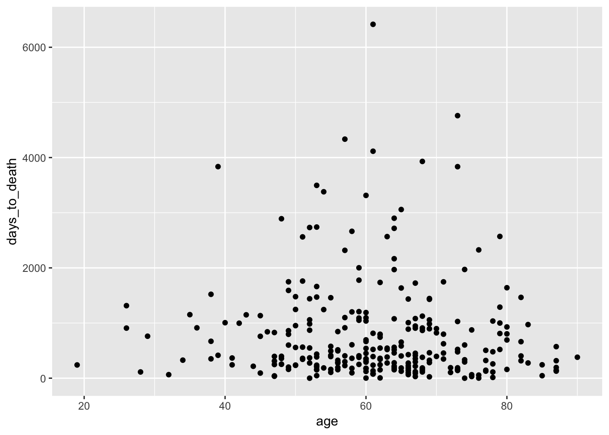

Angewandte Datenanalyse mit R
Tag 2 - Datentransformation und -visualisierung
Übung 3 - Dataframe vs. Tibble
Vergleicht den Output eines “normalen” Dataframes mit einem Tibble. Welche zusätzlichen Informationen bzw. Funktionen beeinhaltet ein Tibble?
#Dataframe
head(as.data.frame(hnscc))## id age alcohol days_to_death gender neoplasm_site grade
## 1 TCGA-BA-4074 69 YES 461 MALE Oral Tongue G3
## 2 TCGA-BA-4076 39 YES 415 MALE Larynx G2
## 3 TCGA-BA-4077 45 YES 1134 FEMALE Base of Tongue G2
## 4 TCGA-BA-4078 83 NO 276 MALE Larynx G2
## 5 TCGA-BA-5149 47 YES 248 MALE Floor of Mouth G2
## 6 TCGA-BA-5151 72 YES 190 MALE Buccal Mucosa G1
## pack_years tabacco_group tumor_stage
## 1 51 Current smoker Stage IVA
## 2 30 Current smoker <NA>
## 3 30 Current reformed smoker for < or = 15 years Stage IVA
## 4 75 Current reformed smoker for < or = 15 years <NA>
## 5 60 Current smoker Stage IVA
## 6 20 Current reformed smoker for > 15 years Stage IVA
## vital_status
## 1 DECEASED
## 2 DECEASED
## 3 DECEASED
## 4 DECEASED
## 5 LIVING
## 6 LIVING#Tibble
hnscc## # A tibble: 279 x 11
## id age alcohol days_to_death gender neoplasm_site grade pack_years
## <chr> <int> <chr> <int> <chr> <chr> <chr> <dbl>
## 1 TCGA… 69 YES 461 MALE Oral Tongue G3 51
## 2 TCGA… 39 YES 415 MALE Larynx G2 30
## 3 TCGA… 45 YES 1134 FEMALE Base of Tong… G2 30
## 4 TCGA… 83 NO 276 MALE Larynx G2 75
## 5 TCGA… 47 YES 248 MALE Floor of Mou… G2 60
## 6 TCGA… 72 YES 190 MALE Buccal Mucosa G1 20
## 7 TCGA… 56 YES 845 MALE Alveolar Rid… G2 NA
## 8 TCGA… 51 YES 1761 MALE Tonsil G2 NA
## 9 TCGA… 54 YES 186 MALE Larynx G2 62
## 10 TCGA… 58 YES 179 FEMALE Floor of Mou… G3 60
## # … with 269 more rows, and 3 more variables: tabacco_group <chr>,
## # tumor_stage <chr>, vital_status <chr>Übung 4 - Datentransformation mit dplyr
Überblick über dplyr Funktionen
| Transformation | Funktion |
|---|---|
| Zeilen filtern | filter() |
| Zeilen sortieren | arrange() |
| Spalten selektieren | select() |
| Spaltennamen umbenennen | rename() |
| Neue Spalten hinzufügen | mutate() |
| Gruppenweise transformieren | group_by() & summarize() |
| Transformationen kombinieren | pipe Funktion %>% |
Logische Operatoren
Eine Kategorie auswählen
hnscc$neoplasm_site=="Larynx"Eine Kategorien ausschließen
!hnscc$neoplasm_site=="Larynx"Mehrere Kategorien auswählen
hnscc$neoplasm_site %in% c("Tonsil", "Oral Tongue", "Hard Palate")Aufgaben
Erstellt die folgenden Teilmengen des Datensatzes, bzw. führt die folgenden Transformationen aus:
- Junge Patienten (< 50 Jahre), Nichtraucher, Zeilen sortiert nach Alter.
- Dataframe mit Spalten “age” und “grade”. Ändert die Spaltennamen ins Deutsche um.
- Fügt dem
hnsccDataframe eine neue Spalte mit Namen “is_young” hinzu, die mit TRUE und FALSE kodiert, ob jemand < 50 Jahre ist. - Berechnet das mediane Gesamtüberleben nach Grading. Ist das Resultat biologisch plausibel?
Übung 5 - Datenvisualisierung mit ggplot2
In der heutigen Präsentation haben wir neben x-Achse und y-Achse weitere Aesthetics (shape, color, size), sowie das Facetting kennen gelernt. Überlegt euch eine sinnvolle Visualisierung (am besten Dotplot), die insgesamt 5 Dimensionen der Daten abbilden.a) In der heutigen Präsentation haben wir neben x-Achse und y-Achse weitere Aesthetics (shape, color, size), sowie das Facetting kennen gelernt. Überlegt euch eine sinnvolle Visualisierung (am besten Dotplot), die insgesamt 5 Dimensionen der Daten abbilden.
Versucht die Transformationen und Settings des folgenden Barplots nachzuvollziehen. Wie wird hier die Transformation mit dem Plotten verzahnt? Was macht z.B.
coord_flip?
hnscc %>%
group_by(neoplasm_site) %>%
summarize(mean_age=mean(age)) %>%
ggplot(aes(x=reorder(neoplasm_site,mean_age),y=mean_age)) +
geom_bar(stat="identity") +
coord_flip() +
xlab("anatomical site") +
ylab("mean age")
- “Googled” danach, wie man dem folgenden Plot eine Regressionsgrade hinzufügen kann:
ggplot(hnscc, aes(x=age, y=days_to_death)) +
geom_point()## Warning: Removed 1 rows containing missing values (geom_point).
Übung 6 - Überlebenszeitanalyse mit survminer
Sucht euch andere Faktoren aus den hnscc Metadaten und untersucht deren Einfluss auf das Gesamtüberleben.
# Overall survival (OS) ist bereits richtig formatiert (als integer in Tagen)
# Censor muss noch richtig formatiert werden (0 = zensiert, 1 = gestorben)
hnscc_survival <- hnscc %>%
dplyr::rename(OS=days_to_death) %>%
mutate(Censor = as.factor(vital_status))
levels(hnscc_survival$Censor) <- c(1,0)
hnscc_survival$Censor = as.numeric(hnscc_survival$Censor)#Template
fit <- survfit(Surv(OS, Censor)~gender, data=hnscc_survival)
ggsurvplot(fit, hnscc_survival, risk.table = FALSE,
pval=TRUE, tables.height=0.25,
palette = c("goldenrod","skyblue4"),
xlab="Time (months)")
colnames(hnscc)[-c(1,4,11)]## [1] "age" "alcohol" "gender" "neoplasm_site"
## [5] "grade" "pack_years" "tabacco_group" "tumor_stage"